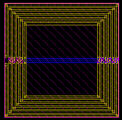
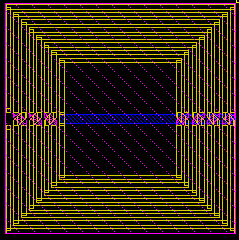
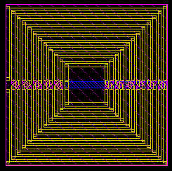

ldiff_stk561 number of turns property
these layouts show the effect of varying the number of turns property for an example ldiff_stk561
number of turns = 4
number of turns = 6

number of turns = 8

number of turns = 12
